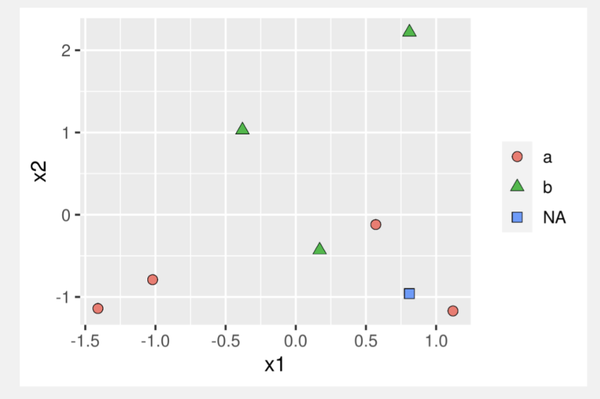

Objetivos de la Clase
- Comprender el funcionamiento del algoritmo k-NN y sus aplicaciones en clasificación y regresión.
- Analizar las ventajas y desventajas del algoritmo k-NN en distintos contextos.
- Aprender a calcular distancias entre observaciones utilizando diferentes métricas.
- Aplicar el algoritmo k-NN en un ejemplo práctico, interpretando los resultados obtenidos.
Recordemos…
Proceso de Data Mining
K-vecinos más cercanos (k-NN)
El algoritmo de K-vecinos más cercanos (k-NN) es un método de clasificación no paramétrica desarrollado por Evelyn Fix y Joseph Hodges en 1951, y posteriormente expandido por Thomas Cover. Es utilizado tanto para clasificación como para regresión.
Características Principales:
- No Paramétrico: No asume una distribución específica de los datos.
- Basado en Instancias: Clasifica nuevos casos basándose en la similitud con casos anteriores.
- Versátil: Aplicable en problemas de clasificación y regresión.
- Simplicidad: Fácil de implementar y entender.
Ventajas:
- Fácil de Implementar: Requiere pocos ajustes y es intuitivo.
- Eficaz con Datos No Lineales: Funciona bien en espacios de alta dimensión.
- Adaptativo: Se adapta a la distribución de los datos.
Desventajas:
- Escalabilidad: Puede ser computacionalmente costoso con grandes conjuntos de datos.
- Sensibilidad a la Escala de los Datos: Requiere una buena normalización de las características.
- Elección de K: Determinar el valor óptimo de K puede ser desafiante.
Pasos del Algoritmo k-NN
Calcular la distancia
Calcula la distancia, por ejemplo, euclidiana, entre la observación que se desea clasificar \(x\) y el resto \(x_i\) con \(i = 1, 2, \ldots, n\).
Ordenar las distancias
Ordena las \(n\) distancias obtenidas anteriormente en orden ascendente.
Seleccionar los k vecinos más cercanos
Considera \(k\) como un entero positivo y toma las primeras \(k\) distancias de la disposición anterior.
Estimar las categorías de los k puntos
Usando estas \(k\) distancias, identifica los \(k\) puntos más cercanos.
Pasos del Algoritmo k-NN
Contar las categorías
Para cada categoría \(i\), cuenta la cantidad de puntos \(k_i\) que corresponden a la \(i\)-ésima categoría entre los \(k\) puntos.
Asignar la categoría
Comprueba la condición \(k_i > k_j\) para todas las categorías \(j \neq i\). Si se cumple, asigna a \(x\) la categoría \(i\).
Pasos del Algoritmo k-NN
Algoritmo KNN
Cómo Encontrar el Mejor Valor de K
- Ajustar el Clasificador KNN para Distintos Números de K Impares
- Seleccionar valores impares de K para evitar empates en la clasificación.
- Entrenar el modelo k-NN con cada valor seleccionado de K.
- Obtener Predicciones
- Utilizar el modelo entrenado para predecir las etiquetas de los datos de prueba.
- Registrar las predicciones para cada valor de K.
Cómo Encontrar el Mejor Valor de K
- Evaluar el Rendimiento Utilizando las Predicciones Producidas
- Calcular métricas de rendimiento como la precisión, la exactitud, el recall o el F1-score.
- Utilizar conjuntos de validación cruzada para obtener una evaluación robusta.
- Comparar los Resultados de Cada Modelo y Decidir Cuál Tiene el Menor Error
- Analizar las métricas obtenidas para cada valor de K.
- Seleccionar el valor de K que proporcione el mejor balance entre sesgo y varianza, minimizando el error de clasificación.
Cómo Encontrar el Mejor Valor de K
KNN Optimo
Desventajas del Algoritmo k-NN
Alto Costo Computacional con Grandes Conjuntos de Datos:
No funciona con buena precisión al tomar grandes conjuntos de datos porque el costo de calcular la distancia entre el nuevo punto y cada uno de los puntos existentes es enorme y, a su vez, degrada el rendimiento del algoritmo.
Dificultad con Datos de Alta Dimensión:
Trabajar con datos de alta dimensión es bastante difícil con este algoritmo porque el cálculo de la distancia en cada dimensión no es correcto.
Desventajas del Algoritmo k-NN
Necesidad de Escalado de Características:
Es muy necesario realizar el escalado de características, es decir, la estandarización y normalización antes de implementar el algoritmo k-NN en cualquier conjunto de datos.
Sensible a Datos Ruidosos, Valores Perdidos y Valores Atípicos:
k-NN es sensible al ruido en el conjunto de datos. Es necesario imputar manualmente los valores perdidos y eliminar los valores atípicos.
Distancia Euclidiana
La distancia euclidiana se utiliza con más frecuencia para medir la distancia entre las observaciones \(i\) y \(j\) para \(n\) características continuas.
Fórmula de la Distancia Euclidiana
\[
D(\mathbf{x}_i, \mathbf{x}_j) = \sqrt{ \sum_{m=1}^{n} (x_{i,m} - x_{j,m})^2 }
\]
Distancia Euclidiana
Distancia Euclidiana
Características de la Distancia Euclidiana:
- Aplicabilidad: Ideal para datos con características continuas.
- Simplicidad: Fácil de entender y calcular.
- Sensibilidad a la Escala: Requiere que las características estén escaladas o normalizadas para evitar sesgos.
- Uso Común: Empleada frecuentemente en problemas de clasificación y clustering.
Distancia de Manhattan
La distancia de Manhattan se utiliza para medir la distancia entre dos observaciones \(i\) y \(j\) en un espacio de \(n\) características continuas. Es particularmente útil en espacios de alta dimensión y cuando las diferencias en cada dimensión son igualmente importantes.
Fórmula de la Distancia de Manhattan
\[
D_{\text{Manhattan}}(\mathbf{x}_i, \mathbf{x}_j) = \sum_{m=1}^{n} |x_{i,m} - x_{j,m}|
\]
Características de la Distancia de Manhattan:
- Aplicabilidad:
- Ideal para datos en los que las diferencias absolutas en cada dimensión son relevantes.
- Utilizada en problemas de clasificación y clustering donde la geometría del espacio es similar a una cuadrícula.
- Simplicidad:
- Fácil de calcular ya que solo requiere sumar las diferencias absolutas.
- Menos computacionalmente costosa que la distancia euclidiana en algunos contextos.
Características de la Distancia de Manhattan:
- Robustez:
- Menos sensible a valores atípicos en comparación con la distancia euclidiana.
- Puede ser más adecuada cuando las dimensiones tienen diferentes escalas o unidades.
- Limitaciones:
- No captura las interacciones entre dimensiones de la misma manera que la distancia euclidiana.
- En algunos casos, puede no reflejar adecuadamente la similitud real entre observaciones.
Métrica de Minkowski
La distancia de Minkowski es una métrica general que engloba tanto la distancia euclidiana como la distancia de Manhattan como casos especiales. La distancia euclidiana resulta de la selección \(q = 2\), mientras que la distancia de Manhattan corresponde al valor del parámetro \(q = 1\).
Fórmula de la Distancia de Minkowski
\[
D(\mathbf{x}_i, \mathbf{x}_j) = \left( \sum_{m=1}^{n} |x_{i,m} - x_{j,m}|^q \right)^{1/q}
\]
Características de la Distancia de Minkowski:
Generalización de Distancias:
Permite ajustar el parámetro \(q\) para definir diferentes tipos de distancias, proporcionando flexibilidad en su aplicación.
Interconexión con Otras Métricas:
- \(q = 1\): Distancia de Manhattan.
- \(q = 2\): Distancia Euclidiana.
- \(q \to \infty\): Distancia Chebyshev.
Flexibilidad:
Admite distintos valores de \(q\) para adaptarse a diferentes contextos y necesidades de análisis, permitiendo una personalización según la naturaleza de los datos.
Métrica de Canberra
La distancia de Canberra es una versión ponderada de la distancia de Manhattan.
Fórmula de la Distancia de Canberra
\[
D(\mathbf{x}_i, \mathbf{x}_j) = \sum_{m=1}^{n} \frac{|x_{i,m} - x_{j,m}|}{|x_{i,m}| + |x_{j,m}|}
\]
Características de la Distancia de Canberra:
Ponderación de Diferencias Absolutas:
Considera las diferencias relativas en lugar de las absolutas, lo que la hace más sensible a las diferencias pequeñas cuando los valores son cercanos a cero.
Aplicabilidad:
Ideal para datos donde las características tienen diferentes escalas y es necesario considerar la proporción de las diferencias.
Robustez:
Menos influenciada por grandes diferencias absolutas, proporcionando una medida más equilibrada en ciertos contextos.
Uso Común:
Empleada en áreas como el análisis de imágenes, bioinformática y sistemas de recomendación, donde la relación entre características es crucial.
Similitud de Coseno
La similitud del coseno será 1 cuando el ángulo entre dos vectores sea 0, es decir, apunten en la misma dirección. En este caso, la distancia debe ser 0. Se usa para datos que involucran palabras (NLP) y sistemas de recomendación.
Similitud de Coseno
Fórmula de la Similitud de Coseno
\[
\cos \theta = \frac{ \sum_{i=1}^n A_i B_i }{ \sqrt{ \sum_{i=1}^n A_i^2 } \times \sqrt{ \sum_{i=1}^n B_i^2 } }
\]
Características de la Similitud de Coseno:
- Aplicabilidad:
- Ideal para datos textuales en procesamiento de lenguaje natural (NLP).
- Empleada en sistemas de recomendación para medir la similitud entre usuarios o ítems.
- Ventajas:
- Invariante a la Magnitud: Enfocándose en la orientación de los vectores, no en su magnitud.
- Eficaz en Alta Dimensionalidad: Funciona bien con representaciones de texto y datos de alta dimensionalidad.
Características de la Similitud de Coseno:
- Limitaciones:
- No Considera la Magnitud Absoluta: Puede no ser adecuada en contextos donde la magnitud de los vectores es relevante.
- Sensibilidad a la Selección de Características: La relevancia de las características puede afectar la precisión de la similitud.
Descripción del Problema
Se desea predecir la clase de la observación 8 utilizando el algoritmo k-NN.
Datos
| 1 |
0.57 |
-0.12 |
a |
| 2 |
-1.41 |
-1.14 |
a |
| 3 |
1.12 |
-1.17 |
a |
| 4 |
0.17 |
-0.43 |
b |
| 5 |
-0.38 |
1.03 |
b |
| 6 |
0.81 |
2.22 |
b |
| 7 |
-1.02 |
-0.79 |
a |
| 8 |
0.81 |
-0.96 |
? |
Aplicación del Algoritmo k-NN
- Seleccionar k=3
- Calcular las distancias de la observación 8 a todas las demás observaciones utilizando la distancia Euclidiana.
- Ordenar las distancias en orden ascendente.
- Seleccionar los 3 vecinos más cercanos.
- Asignar la clase más frecuente entre los vecinos seleccionados.
Resultados
- Vecinos más cercanos: Observaciones 1, 3, y 6
- Clases de los vecinos: a, a, b
- Predicción: Clase a (Mayoría de vecinos)
Cómo Encontrar el Mejor Valor de K
Ejemplo 1
Aplicaciones del Algoritmo k-NN
El algoritmo k-vecinos más cercanos (k-NN) es uno de los más populares para la categorización de texto y la minería de texto. Su simplicidad y eficacia lo hacen ampliamente utilizado en diversos sectores.
Aplicaciones en Diferentes Sectores:
- Agricultura:
- Evaluación de inventarios forestales y la estimación de variables forestales, con el uso de imágenes de satélites.
- Pronóstico del clima y la estimación de los parámetros del agua del suelo.
Aplicaciones del Algoritmo k-NN
- Finanzas:
- Pronóstico del mercado de valores: predice el precio de una acción, basándose en las medidas de desempeño de la empresa y los datos económicos.
- Tipo de cambio de moneda.
- Comprensión y gestión del riesgo financiero.
- Calificación crediticia.
- Gestión de préstamos.
- Elaboración de perfiles de clientes bancarios.
- Análisis de blanqueo de dinero.
Aplicaciones del Algoritmo k-NN
- Medicina:
- Predecir si un paciente, hospitalizado debido a un infarto, tendrá un segundo infarto.
- Estimar la cantidad de glucosa en la sangre de una persona diabética, a partir del espectro de absorción infrarroja de la sangre de esa persona.
- Identificar los factores de riesgo de cáncer de próstata, basándose en datos clínicos y variables demográficas.
Conclusiones
- El algoritmo k-NN es una herramienta sencilla y efectiva para tareas de clasificación y regresión.
- La elección del valor de k es crucial y debe seleccionarse cuidadosamente para equilibrar sesgo y varianza.
- Es esencial preprocesar los datos, incluyendo la normalización o estandarización de las características para mejorar el rendimiento del modelo.
- Aunque es fácil de implementar, k-NN puede ser computacionalmente costoso en conjuntos de datos grandes y es sensible a la dimensionalidad.
- Comprender las ventajas y limitaciones del algoritmo permite aplicarlo de manera más efectiva en diferentes contextos y problemas.